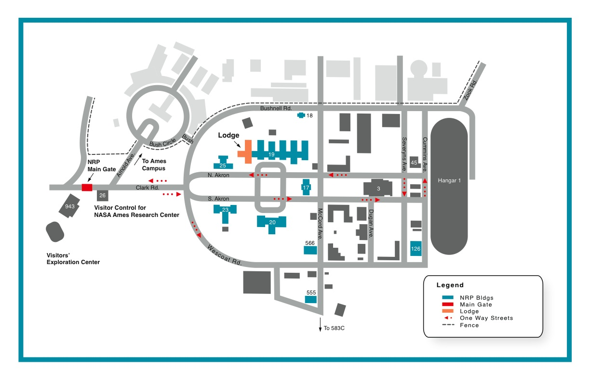

LGC 2010: Logistics
Venue
LunGradCon 2010 will be held at the scenic NASA Ames Research Center in Mountain View, CA. The conference will be hosted by NASA's Lunar Science Institute which is headquartered at NASA Ames.
NASA Ames Research Center is located in Mountain View, CA in the heart of Silicon Valley. Ames is a leader in nanotechnology, fundamental space biology, biotechnology, aerospace and thermal protection systems, and human factors research. Ames research in astrobiology focuses on the effects of gravity on living things, and the nature and distribution of stars, planets and life in the universe. As a leader in information technology research with a focus on supercomputing, networking and intelligent systems, Ames conducts the critical R/D and develops the enabling technologies that make NASA missions possible.
Ames has been heavily involved in lunar robotic missions. LCROSS was designed, developed, operated, and managed at NASA Ames, and the center managed and operated the Lunar Prospector mission in 1998. The Lunar Atmospheric and Dust Environment Explorer (LADEE) is currently managed out of Ames.
ARC is only a short distance from downtown Mountain View, which hosts a wide variety of restaurants, coffeehouses, specialty shops, galleries, and year-round farmers markets. An even broader range of dining and entertainment opportunities are all within a short drive.
LunGradCon 2010 will take place on the NASA ARC campus in Building 3. Below is a map of the surrounding area, including NASA ARC, Moffett Field and the town of Mountain View, CA.
Air Travel
LunGradCon participants should plan to arrive on the evening of Saturday, July 17, 2010 in Mountain View, CA. The conference will begin promptly on the morning of Sunday, July 18, 2010.
Participants should fly to the San Jose International Airport in San Jose, CA, which is a 15 minute drive from Mountain View and NASA ARC.
Lodging
LunGradCon has reserved a block of rooms at the Quality Inn and Suites in Mountain View. The hotel is a 20 min walk from the hotel to Building 3 at Ames Research Center and a 30 min walk downtown. The hotel offers free high-speed internet, a hot breakfast buffet (yum!), and fitness center, and each room has a microwave and refrigerator.
Rooms will be reserved for registered participants for the nights of July 17th and 18th, and roommates will be assigned (roommate requests are welcome and will be honored).
Travel Funding
LunGradCon 2010 has a limited amount of travel funds to defray the costs of air travel and lodging.
- Airfare / Ground Transportation
LunGradCon will provide $300 or the total transportation cost (whichever is less) for airfare and ground transportation to the hotel. Depending on the number of attendees, LGC may have extra funds; however, we cannot guarantee this.
- Lodging
As noted above, LGC has reserved a block of rooms for Saturday and Sunday night at the Quality Inn and Suites at no cost to the attendees. If you wish to lodge in the Quality Inn, please mark the appropriate box on the Registration form. Rooms will be two queen beds with two people, maximum. If you have a roommate preference, please note in the Registration form; otherwise, LGC will assign you a roommate.
Contact Information
Questions? Email the conference organizers.
Ames Map
View Larger Map 